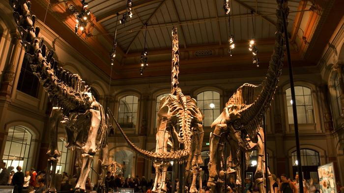
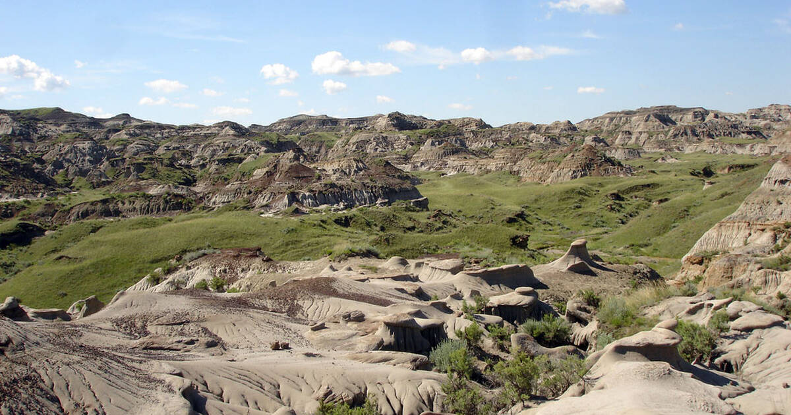
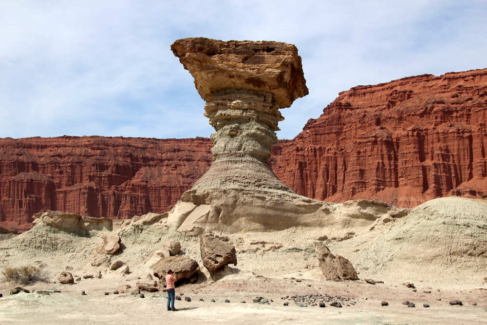

Panduan Wisata Paleontologi: Situs Fosil Terbaik di Dunia
Jika Anda ingin menjelajahi dunia dinosaurus, berikut adalah beberapa situs terbaik di dunia untuk wisata paleontologi:
1. Museum of the Rockies (Montana, AS)

Museum ini terkenal dengan koleksi Tyrannosaurus rex terbesar di dunia. Selain itu, museum ini memiliki berbagai fosil dari dinosaurus lain seperti Triceratops dan Hadrosaurus.
2. Dinosaur Provincial Park (Alberta, Kanada)
Situs yang masuk dalam daftar UNESCO ini memiliki lebih dari 40 spesies dinosaurus yang telah ditemukan di sini. Pengunjung dapat menikmati tur fosil dan pemandangan alam yang menakjubkan.
3. Ischigualasto (Argentina)
Dikenal sebagai "Valley of the Moon," tempat ini adalah lokasi di mana banyak fosil dari era Trias ditemukan. Ischigualasto menawarkan pengalaman mendalam tentang kehidupan dinosaurus purba.
Wisata paleontologi adalah cara yang luar biasa untuk belajar lebih banyak tentang sejarah kehidupan di Bumi. Kunjungi situs-situs ini untuk pengalaman yang tak terlupakan!